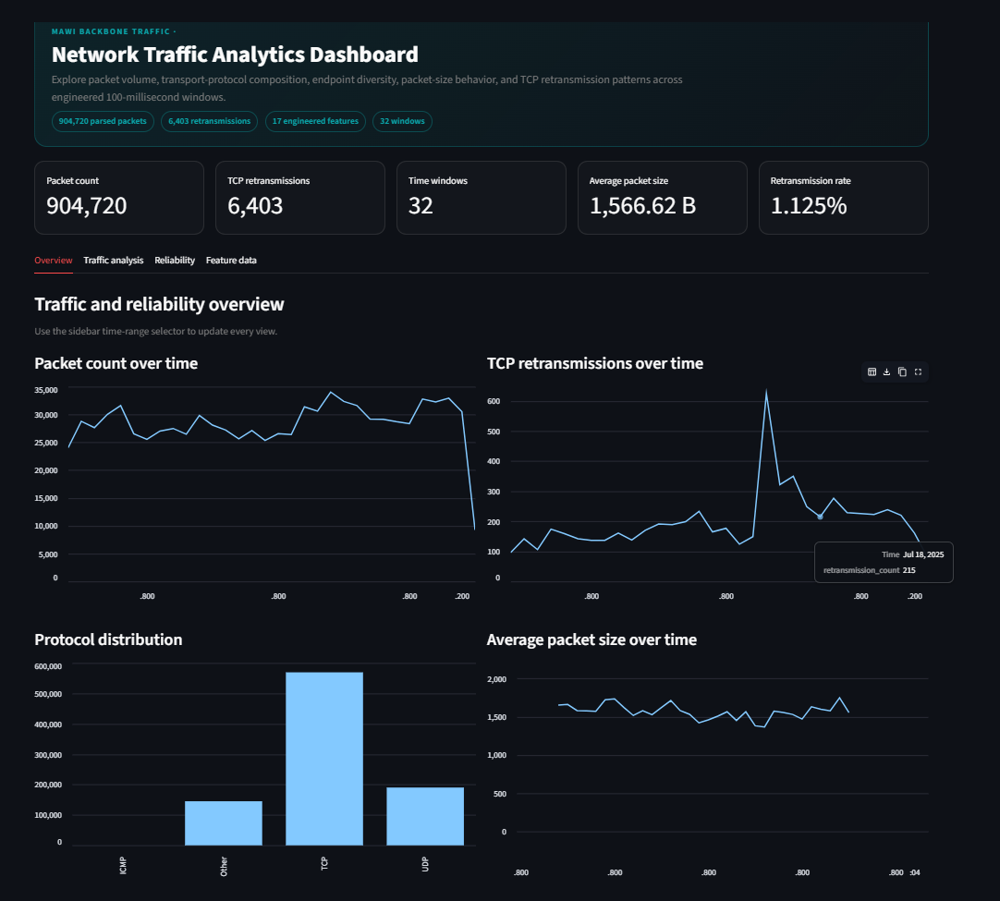
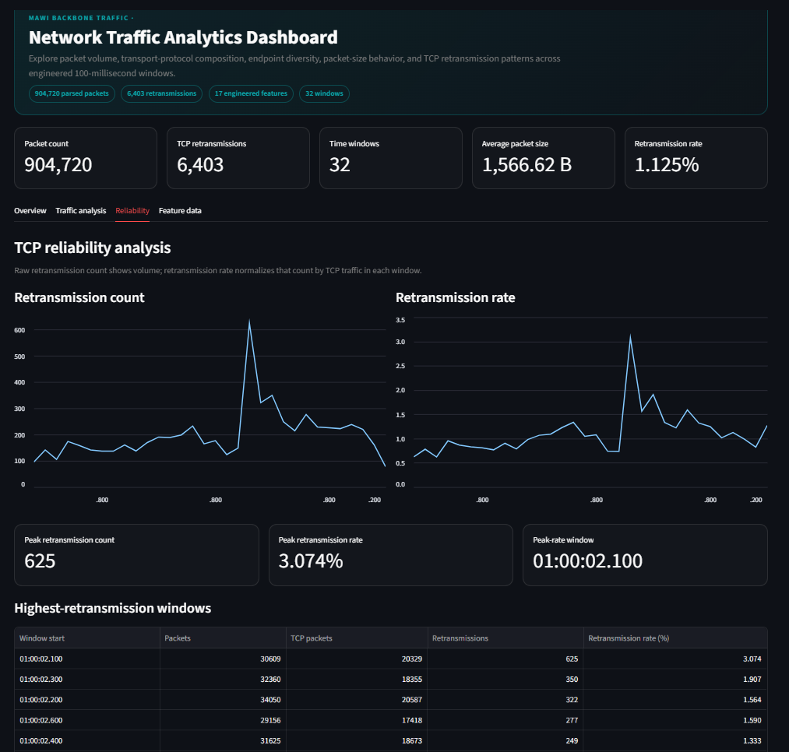
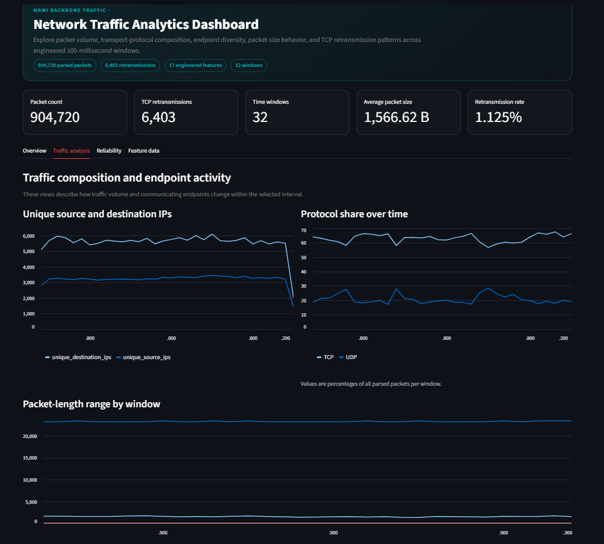
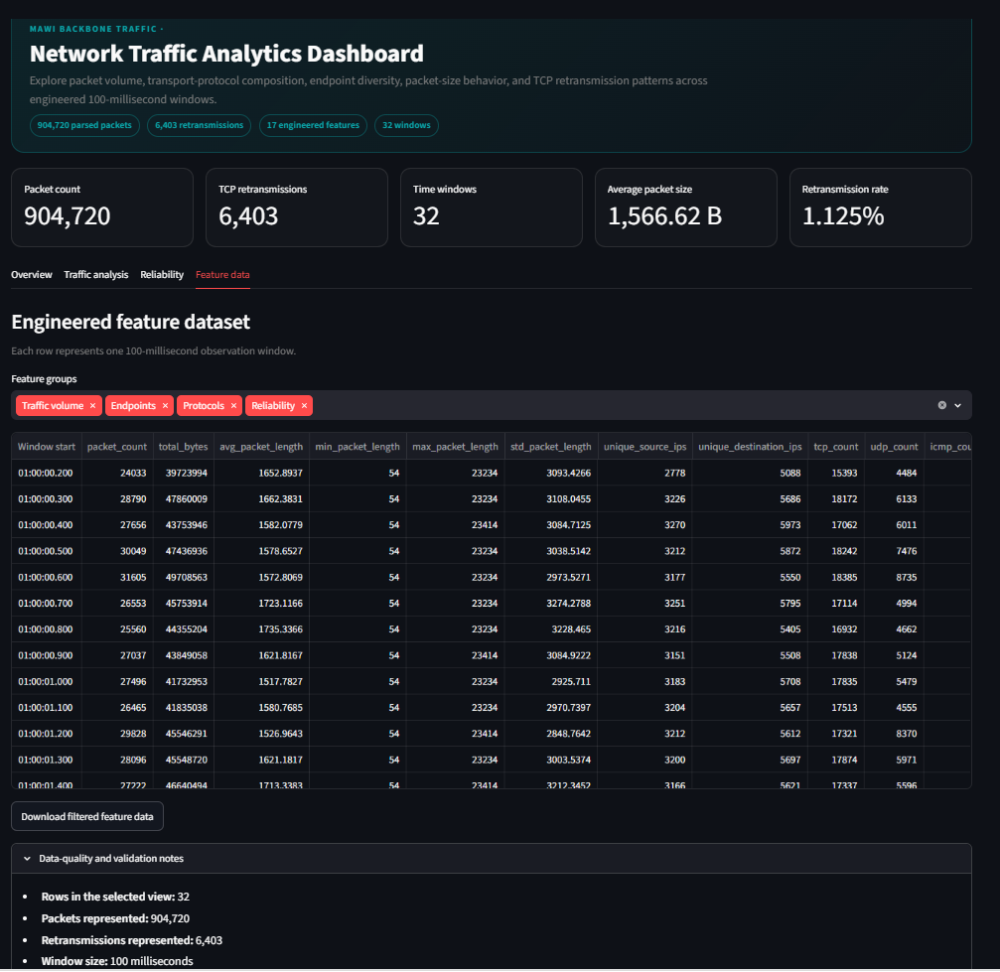

Packets parsed
904,720
An end-to-end system that transforms real backbone packet captures into structured network features, reliability metrics, and an interactive Streamlit dashboard.
Project focus
Network reliability, retransmission behavior, protocol composition, time-window feature engineering, and scalable PCAP analysis.
Packets parsed
904,720
Retransmissions
6,403
Engineered features
17
100 ms windows
32
Click a metric to see what it represents.
01 — OVERVIEW
Modern backbone networks can generate hundreds of thousands of packets per second. Wireshark is excellent for inspecting individual frames, but manually reviewing nearly one million packets is not a practical way to understand traffic behavior, reliability, or protocol trends.
This project builds a repeatable analytics pipeline around a public MAWI backbone capture. It parses packet-level data, identifies TCP retransmissions, engineers time-windowed features, and exposes the results through an interactive dashboard designed for exploratory network analysis.
Problem
Raw PCAP files are detailed but difficult to summarize at scale.
Solution
Convert packets into structured features and interactive network visualizations.
02 — CURRENT STATUS
The one-million-packet prototype is now fully connected from packet parsing through Streamlit Version 2. Future components are clearly separated from the capabilities already implemented.
03 — SYSTEM ARCHITECTURE
Each stage is separated so the parser, feature engineering logic, and dashboard can be tested and improved independently.
INPUT
MAWI PCAP
PARSE
PyShark
ENGINEER
Pandas
PRESENT
Streamlit
04 — PROCESSING PIPELINE
Development began with approximately one million packets extracted from the original 19 GB MAWI capture. This kept iteration manageable while preserving realistic backbone traffic characteristics.
PyShark and TShark extracted packet number, capture time, source and destination IPs, transport protocol, and packet length. The resulting structured dataset contained 904,720 packets with the required IP-layer fields.
Wireshark’s TCP analysis field tcp.analysis.retransmission was used to isolate 6,403 retransmission events for reliability analysis.
The sample spans about 3.12 seconds. One-second aggregation produced only four observations, so 100-millisecond windows were selected to create 32 higher-resolution observations.
04 — FEATURE ENGINEERING
The feature table summarizes what happened during each 100 ms interval, making the capture easier to visualize and suitable for future machine-learning experiments.
retransmission_rate = retransmission_count / tcp_count
06 — INTERACTIVE DASHBOARD
Version 2 reorganizes the dashboard into focused views rather than one long sequence of charts. A shared time-range filter updates the dashboard, while protocol controls and feature-group selectors make the interface more useful for exploratory analysis.




Overview
Traffic and reliability KPIs
Traffic
Protocols, endpoints, and sizes
Reliability
Retransmission count and rate
Feature data
Grouped columns and CSV export
07 — CURRENT RESULTS
| Metric | Result | Purpose |
|---|---|---|
| Original capture | ~19 GB | Full-scale source dataset |
| Development sample | ~1M packets | Fast, repeatable prototyping |
| Parsed packets | 904,720 | Structured packet analysis |
| TCP retransmissions | 6,403 | Reliability monitoring |
| Aggregation interval | 100 ms | Higher temporal resolution |
| Feature windows | 32 | Dashboard observations |
| Engineered features | 17 | Structured analytics and future ML input |
| Dashboard release | Streamlit V2 | Tabs, filters, charts, tables, and export |
08 — ENGINEERING CHALLENGES
The 19 GB source capture required a smaller representative sample for rapid iteration and debugging.
Some values included microseconds while others ended on exact seconds, requiring mixed-format datetime parsing.
A 100 ms interval was selected after one-second windows produced too few observations for useful trend analysis.
Raw PCAPs, virtual environments, and the large packet-level CSV are excluded from source control while reproducible scripts remain versioned.
09 — ROADMAP
Publish the current dashboard, add top talkers and port analytics, and introduce deeper drill-down views.
Interarrival statistics, burst intensity, TCP flags, five-tuple flows, and non-IP packet analysis.
Chunked and batch processing for larger portions of the original 19 GB capture.
REST API, React interface, Docker deployment, and later machine-learning experiments.
FINAL THOUGHTS
The current implementation is a validated prototype that connects packet parsing, network reliability analysis, feature engineering, and a multi-view Streamlit Version 2 application. It demonstrates how raw network data can be transformed into a reusable analytics product rather than stopping at manual inspection.